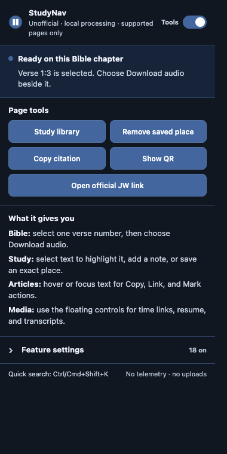
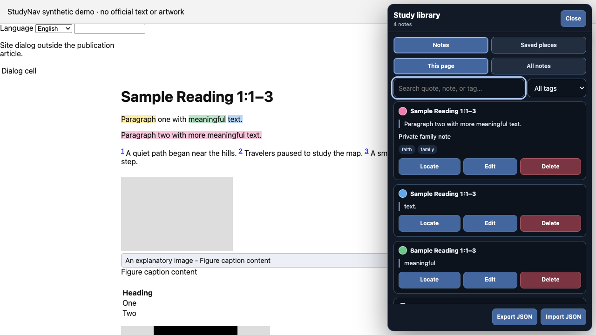
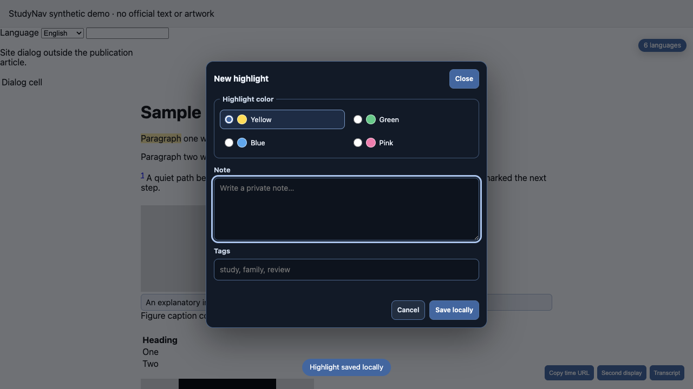
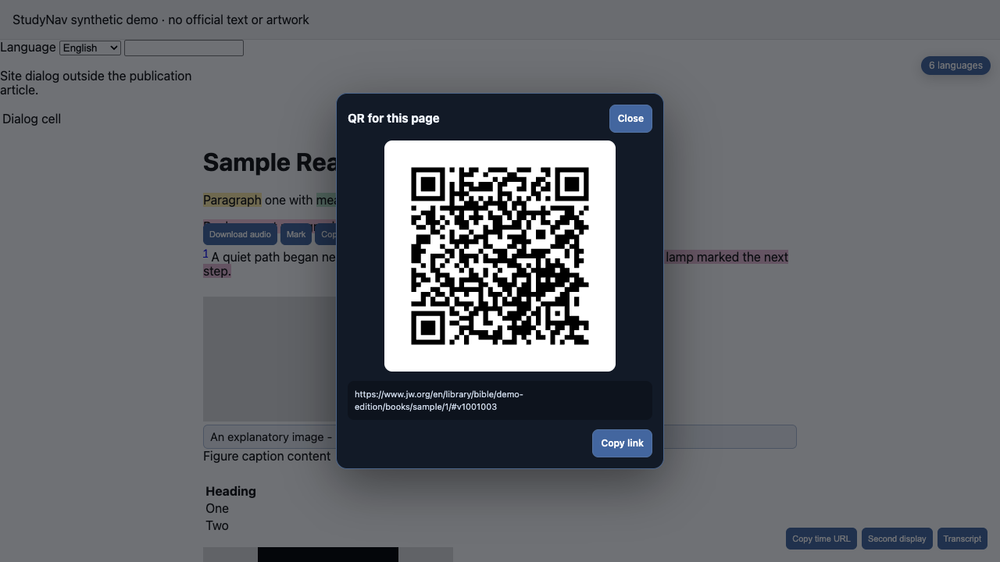

1
Study a paragraph
Select text, choose one of four highlight colors, optionally add a private note and tags, then search it later in Study library.
Version 1.4 · local-first · English + Russian
StudyNav adds optional highlights, notes, saved places, precise links, one-verse audio, and media helpers to supported public JW.org pages. Personal study data stays in the browser.

Unofficial project. StudyNav is not produced, endorsed, or maintained by Jehovah’s Witnesses. Every screenshot and tutorial uses a clearly labeled synthetic fixture—no official publication text, artwork, logo, or page design is reproduced.
Complete walkthrough
The chaptered video covers all 22 settings. Each scene names the feature, shows its result on the synthetic fixture, and moves on without long pauses.
Start here
The popup tells you which workflow is available on the current page. Advanced toggles stay out of the way until needed.
Select text, choose one of four highlight colors, optionally add a private note and tags, then search it later in Study library.
Save the current page, paragraph, or selected verse. Saved places are local, searchable, removable, and included in JSON backup.
Select a verse number and choose Download audio. StudyNav clips the official chapter audio locally and saves only that verse as WAV.
Use keyboard controls, copy a time link, resume explicitly, open a second display, or search and download the page transcript.
Copy a formatted citation, paragraph link, or visible local QR code derived from the current supported page.
Image download and the three layout-changing helpers are off by default. WOL layout overrides are always suppressed.
Page, paragraph, and verse bookmarks with exact targets, search, remove, and merge-only JSON backup.
Chrome manifest, popup, injected controls, editors, dialogs, errors, and accessibility labels follow a Russian browser locale.
Feature reference
The master switch disables every StudyNav surface. Individual choices remain available under Feature settings. “On” below means the default is inert until the relevant page or user action appears.
No feature matches that search.
| Feature | What it does | Default |
|---|---|---|
| Highlights, notes & tags | Four CSS-highlight colors, optional local notes, tags, search, edit, delete, and exact reattach. | On |
| Saved places | Save and reopen exact supported pages, paragraphs, and verses. Search and remove them in Study library. | On |
| Copy formatted citations | Copy selected text, a selected verse, or the page title with its precise validated HTTPS link. | On |
| Show QR for this page | Create a visible QR code locally for the precise link; no QR request leaves the browser. | On |
| Open official JW link | Build a Finder URL only when the current page exposes valid publication metadata. | On |
| Feature | What it does | Default |
|---|---|---|
| Download verse audio | Select one verse number and save only its locally clipped narration as PCM WAV. | On |
| Copy text | Copy a paragraph or verse without StudyNav labels or controls. | On |
| Copy paragraph link | Copy a direct link to the paragraph or verse anchor. | On |
| Quick publication search | Press Ctrl/Cmd+Shift+K to search supported mnemonics or a document ID. | On |
| Image descriptions | Show an eligible image’s existing alt text and caption below it. | On |
| Download article images | Add a compact semantic download button beside eligible article images. | Off |
| Available languages | Show the number of real language options exposed by the page. | On |
| Feature | What it does | Default |
|---|---|---|
| Keep page header visible | Use a narrow sticky-header rule on supported JW.org articles only. | Off |
| Wider reading column | Use more of the viewport for supported article text without touching dialogs. | Off |
| Clearer tables | Add bounded row separation to tables inside the supported article root. | Off |
| Feature | What it does | Default |
|---|---|---|
| Dim player controls | Reduce player chrome until hover or keyboard focus. | On |
| Larger subtitles | Increase subtitle size and background contrast. | On |
| Media keyboard shortcuts | Use Space/K, J/L, F, and M without hijacking editable controls. | On |
| Copy time link | Copy the current media URL with its playback time, or the unchanged page URL if no video is present. | On |
| Continue watching | Store bounded progress locally and seek only after an explicit Resume click—never autoplay. | On |
| Open second display | Open the current media source in a separate 960×540 popup window. | On |
| Search video transcript | Open, search, and download transcript text already available on the current page. | On |
Interface tour
StudyNav overlays are fixed to the viewport and its highlights do not wrap or rewrite source text nodes.



Data boundary
StudyNav does not create an account, backend, telemetry stream, or remote study-data sync. Browser extension storage is still part of the local browser profile—not an encrypted vault.
Uninstalling an extension normally removes its local storage. Use Export JSON before reinstalling or moving profiles. Import is merge-only and never deletes existing valid records.
JW.org DOM and media APIs can change. StudyNav fails closed on unsupported routes and error pages, removes its own UI when disabled, and preserves WOL’s native layout.
Product research
The 1.4 decision compared official JW Library workflows, the JW Web Add-on/JWPUBS toolbox, focused media extensions, and community scripts. Only a clear gap with a local, low-noise browser workflow was accepted.
JW Library bookmarks can target an article or chapter, a paragraph, or a Bible verse. StudyNav now mirrors that useful mental model on supported web pages while keeping records local and searchable.
Highlights, notes, tags, backup, precise links, media shortcuts, time links, transcripts, second display, and explicit resume already cover the strongest recurring study and playback needs.
A visit log would collect more browsing behavior than needed. Explicit saved places are clearer, smaller, and user-controlled.
They expand permissions, privacy questions, content handling, and maintenance without strengthening the focused in-page study workflow.
JW Library already provides mature playlist and trim workflows. StudyNav keeps the narrower one-verse clip that is directly useful while reading.
Accounts, moderation, sync conflicts, and a backend would undermine the local-first boundary. Notes and tags remain private to the browser profile.
Owner-controlled install
There is no store auto-update channel in this workflow. Review, build, and reload on your schedule.
brave://extensions or chrome://extensions.packages/studynav/dist. After future builds, press Reload on the same card and refresh open pages.git clone --recurse-submodules https://github.com/kiku-jw/nick-extensions.git
cd nick-extensions
bun install --frozen-lockfile
bun run bootstrap:inkshade
bun run verifyFocused StudyNav build: bun scripts/build-extension.mjs studynav
FAQ
The browser can decode official chapter audio and create a deterministic PCM WAV locally. MP3 encoding would add a much larger encoder and maintenance surface for little benefit.
Yes. Version 1.4 localizes manifest identity, popup, injected controls, study panels, dialogs, messages, errors, and accessibility labels. Page content itself remains whatever language the website provides.
No remote sync is included. Export JSON on one profile and import it on another. Import is bounded and merge-only.
They change the visual geometry of the source page. Keeping them opt-in lowers compatibility risk, and StudyNav suppresses them entirely on WOL.